Glitch Effects
- Glitch Effect
- Apparition
- Breakdown
- Noise Functions
- MF_Vec3Noise3
- MF_Noise1D
- Opacity Mask
- Final Opacity Mask
- Vertex Deformation/WorldPosition Offset
- Color Blending/Emissive
- BaseColor
- Emissive
- Randomized Glitch
源地址：https://deepspacebanana.github.io/deepspacebanana.github.io/

This little project was spawned from being inspired by a video I saw showcasing all the cool Glitch Effects from Horizon Zero Dawn
I decided to try and make some form of a general purpose glitch shader that could be applied to any piece of geometry, I made two variations, one was a simple random distortiony glitch and the other used the same idea and combined it with my previous sphere mask based apparition effect to create a new type of apparition shader. You can see them both below.
Note: You can open the images in a new tab to view them at a higher resolution
Glitch Effect

Apparition
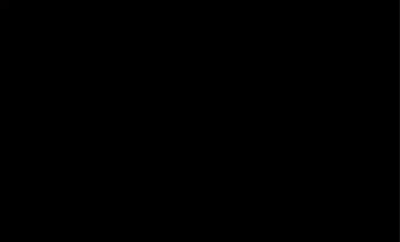
Breakdown
Like some of my previous posts, I encapsulated this entire shader into a material function so that it can be easily layered into any existing shader. So the first step is to create a Material Function.
The next step is to generate a psuedorandom CellNoise, this is what we will use to drive the color and Vertex Deformation of the glitch. You can see the netwrok below
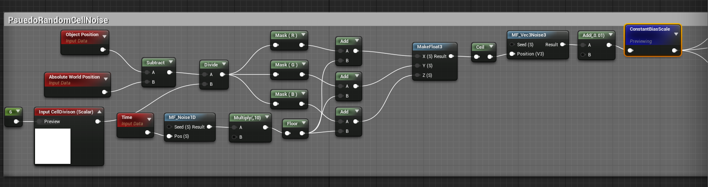
Now you may be wondering, but UE4 already has a “Noise” Function, why don’t you jsut use that? I could have..but I’m weird like that, also for some reason my custom network has less instructions
What this network is doing is essentially taking the localized WorldPosition of the object > adding a time based psuedo-random scalar value to each channel > running it through a custom function MF_Vec3Noise3 which generates a psuedorandom Vector 3 value, which is our cell noise.
I add 0.1 and bias it because my function outputs values from -1 to 1, and i want values tht go from 0-1 instead, the 0.1 is to avoide any complete 0 values.
The output from this network will look like this

Noise Functions
The two noise functions MF_Noise1D and MF_Vec3Noise3 generate psuedo-random values based on inputs that are fed to them, the only difference between them being 1D takes a scalar input and outputs a random scalar value, the Vec3 one takes a Vector3 Input and outputs a Vector3 Psuedorandom Value.
If you would like to learn more about noise, I highly reccommend checking out The Book of Shaders, they do a great job of explaining it as well as it’s many uses.
Here’s what the node network for my functions looks like:
MF_Vec3Noise3
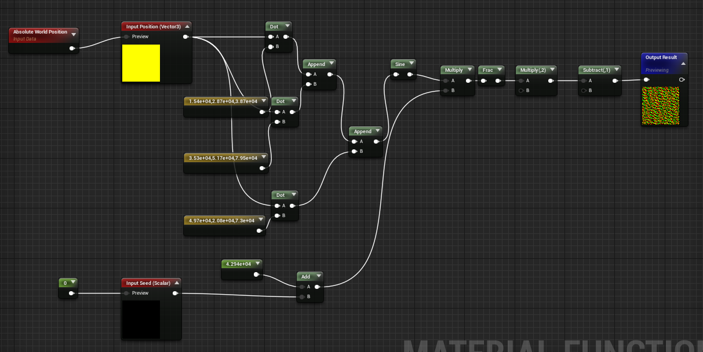
MF_Noise1D
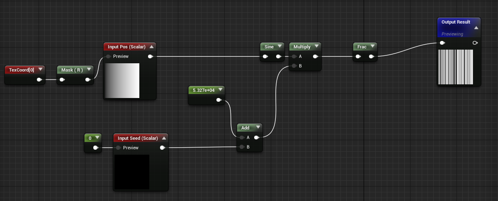
Opacity Mask
The next step is to create a mask that will drive the Opacity
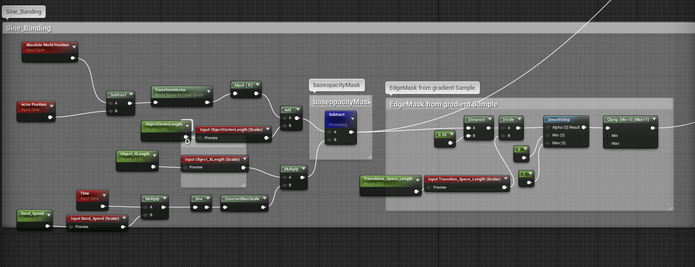
For this too, I calculate the localized worldposition of the object and then isolate the vector along which I want the mask effect to work. In my case I mask out the redChannel which is the X Vector of the object(You could convert this to a parameter so that you can pick along which axis the effect occurs)
We also have input parameters to enter the objects Length etc so that the shader can be customized to work with any object(in the future I will update this post to show how we can procuderally get these values without having to manually enter them).
If you preview the subtract node commented as BaseopacityMask you will see this
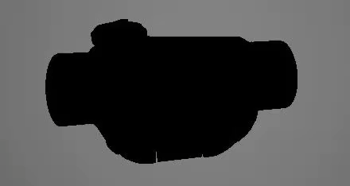
As you can see we have a black and white mask that travels along the x axis of the object, we will combine this with some other outptus to get the final opacity mask.
The Edge Mask from Sample Gradient does exactly what it says, it samples the mask gradient and generates an Edge Mask, we use this to mask out the edge Fx as well as apply VertexDeformation for the Final Shader Effect. If you preview the out put from there you will see this. More on this soon.
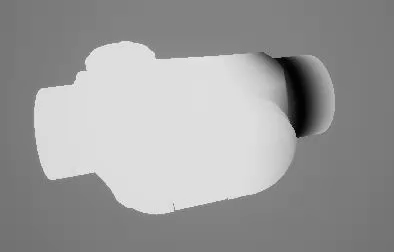
Final Opacity Mask
To generate the final opacity mask we isolate the redChannel from our psuedorandom cell noise>multiply it by a scaling factor(This controls the falloff of the transition,higher value = more falloff and vice versa), and subtract it from the baseopacitymask gradient to generate a cell pattern falloff. As shown below, this will be the input for the OpacityMask in the shader.
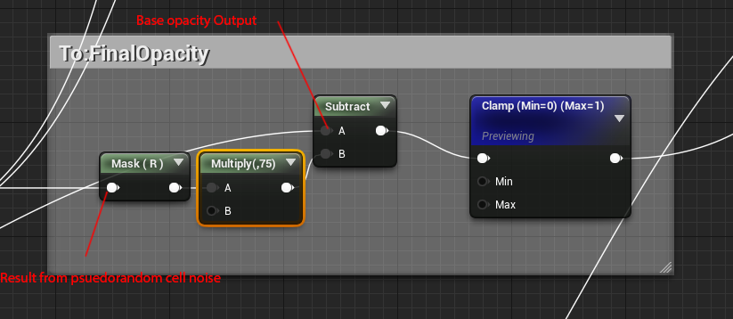
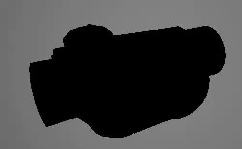
Vertex Deformation/WorldPosition Offset
For the worldposition offset we take the output result from the psuedorandom cell noise > Multiply it with the vertex Normals > multiply it with scaling Factor(Deformation Strength) and then Linear interpolate it with a NULL value using the out put from the Gradient Sample Edge Mask as the alpha. This final result goes into the shader’s WorldPositionOffset Input
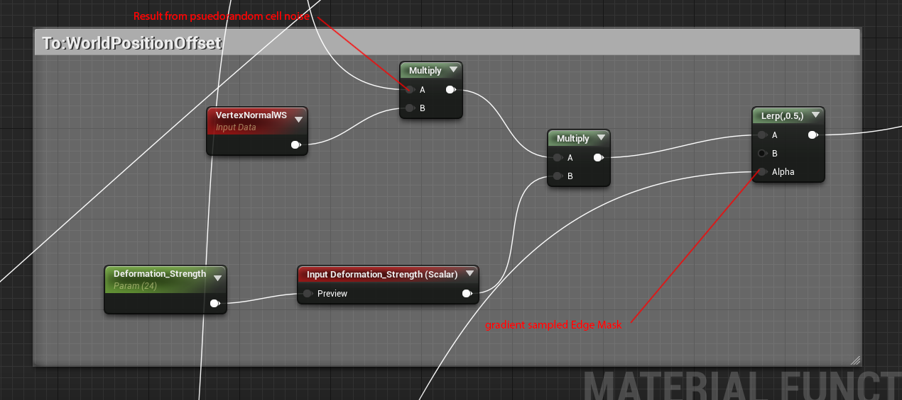
if you preview the shader with just the WPO input, it’ll look like this
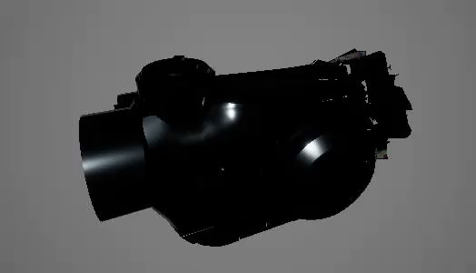
Color Blending/Emissive
For the Final Color we just create a fresnel from the object’s normal map and multiply it by the Psuedorandom cell noise input. Then we blend between this value and the object’s base color using the Gradient Sampled Edge Mask Output. We do the same for the emissive, blending between the Emissive Input, using the Gradient Sampled Edge Mask Output.
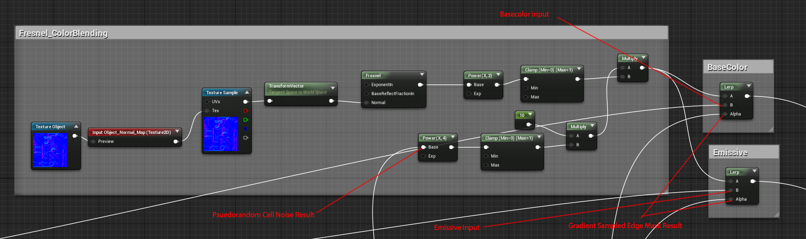
BaseColor
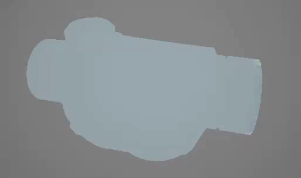
Emissive
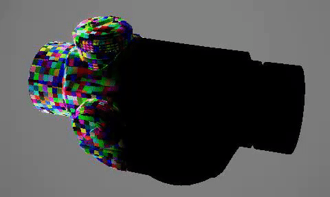
And that’s it! the entire functions node network should look something like this:
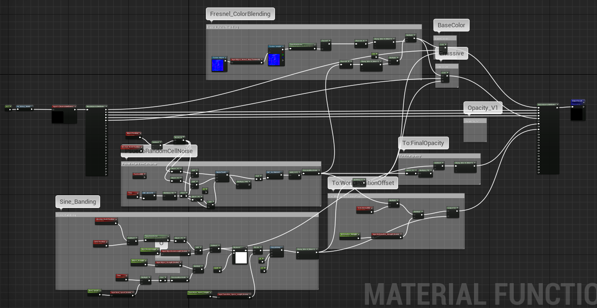
The Function Node will look like this when you use it in your material, it’ll take your entire material as an input and apply the shader effect on top of your existing shader
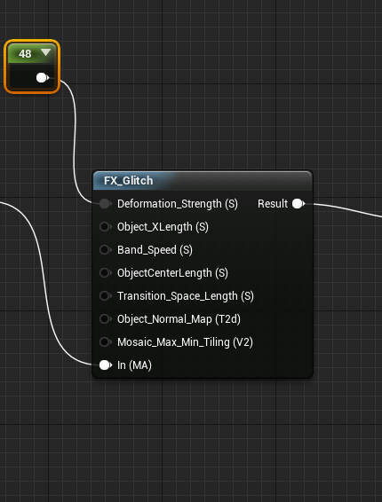
Randomized Glitch
To make make a randomized glitch effect like the one shown above, it’s jsut a matter of swapping out the sine gradient part of network with a netwrok that creates a spheremask with a time based randomised position, which can be done with the following.
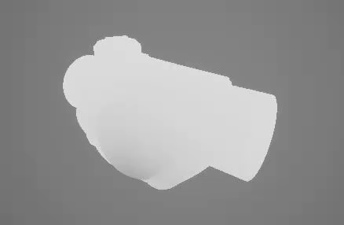
If you preview the result from this, you will see that it is basically a sphere mask that get moved around the model randomly

And that’s it! Hope you found this breakdown useful! Feel free to email me if you have any questions.

关于本文
本文作者 Master Gong Sheng, 许可由 CC BY-NC 4.0.